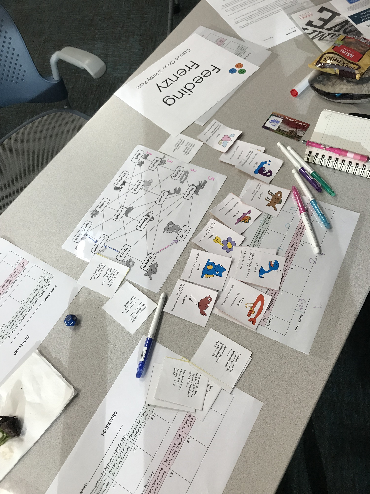

Feeding Frenzy Game
I worked in a team of two to create Feeding Frenzy, an educational board game that teaches about trophic interactions in food webs and the impact of human activities on the ecosystem.
Our game contains two parts; In Part 1, 2-4 players piece together the strange creatures of Woomple Woods and figure out who eats who in this fictional ecosystem while competing to claim as many correct links between species as possible. In Part 2, players explore the impact of human activities on their constructed web of animals and how these effects translate to the real world.
Introduction
In Designing for Educational Games, we were tasked with designing a successful educational game in terms of the EDGE framework. The EDGE framework assesses the educational potential of a game by integrating game theory (mechanics-dynamics-aesthetics), learning science principles, and clearly defined educational goals. The process was highly complex as we needed to consider all components of the framework throughout. I worked with my teammate on all parts of the design process, including ideation, prototyping, playtesting, iterations, and evaluation, within a timeline of 10 weeks.
Process
Brainstorming and Ideation
We began by brainstorming ideas for an educational game in terms of the educational goal component of the EDGE framework. We decided on a cellular respiration game for all ages, and started to think up core mechanics for our game for the initial project pitch and peer feedback.
After further research about the process of cellular respiration and thinking through various mechanics, we foresaw that the domain space of cellular respiration would make for an ineffective learning game due to the level of technical and content knowledge that the topic involves. This would make transfer of skills/knowledge from the game context to real life difficult as well.
We decided to consider broader educational domains that would better integrate with game design (MDA), and through another brainstorming process we defined our educational domain. The domain space we investigated is the role, impact, and importance of keystone species.
Contextual Research
We did further contextual research in the domain of keystone species and the kelp biome to define our learning objectives in more detail.
A keystone species is described as an organism that has a significantly large impact on an ecosystem; it maintains it by controlling populations on which it feeds on or by shaping the environment. Thus, without the keystone species the ecosystem it involves would collapse. We referred to resources such as the National Geographic website to better understand the concept of keystone species and what makes this domain space important.
For example, in the kelp biome, the otter acts as a keystone species by preying on sea urchins. Without the otter, the urchin population would eat all the kelp and overpopulate, eradicating the kelp forests and the diversity of fish and other species that live in it. Human effects on keystone species such as hunting otters and climate change has led to the destruction of these kelp forests in the seas off of eastern Australia and Tasmania to northern California.
Validation of Domain Space
Through interviews with random students on campus and our peers, we found that most undergrads understand that organisms interact via the food web, but many have not heard of the concept of keystone species - which provided some validity for our educational goal.
Learning Goals
We thus defined specific learning goals for our game, initially named Kelp-Needed, before entering our first round of prototyping/playtesting:
- Players should be able to identify the role of keystone species in a specific ecosystem; we decided to use the kelp ecosystem as a model for our initial prototype.
- Players should be able to understand the importance of the keystone species: removal of it will collapse the entire ecosystem, actions of one species affects others in ecosystem.
- As a higher-level secondary goal, players should understand the impact of human activities on the ecosystem and balance of species interplay especially with respect to the keystone species.
Aesthetic/Experience Goals
We envisioned and formalized how we want players to feel and experience our game: our aesthetic goals. With integration of MDA with educational objectives in mind, we defined our aesthetic goals to be Expression, Narrative, and Fellowship. Our aesthetic experience would depend on the approach we took with mechanics; we could promote personal expression through competition and strategy, or fellowship with others as they play for a common goal. With our "human impact" learning goal in mind, we also envisioned players feeling emotionally invested in the well-being of the ecosystem that we may present in the game context.
Designing Core Mechanics
We decided to use the kelp biome as an example to guide our initial prototypes. Through further brainstorming sessions, we came up with ideas for core or partial game mechanics with the three components of the EDGE framework in mind - integrating educational goals, learning science principles, and MDA in various degrees.
Some of our ideas and thoughts included:
- Players do body motions/movements to signal their actions to other players
- Physical item-based; ex. straws to represent kelp, colored stones to represent fish, etc. and players have to grab as many as possible
- Card game like Hanabi where players don’t know their own cards and have to help each other understand what cards to use/not use
- Incorporating events into our game like human activities (Ex: “Humans overfish the kelp ecosystem and the entire fish population is reduced to 2” or Ex: “A disease strikes the kelp forest and all kelp population is decreased by 4”, etc.)
- Numbers-based mechanic with the conventional playing card deck (1-10, AKQJ) and have the players balance the ratio between populations; this would also help determine the mechanic of what “success” means in our game
- Something like Pokemon cards where species have a “Population HP”, “Ability”, and “Moveset”: This idea could make things more interesting but definitely would take more work and consideration for the player interactions.
We decided to move forward with two primary approaches/options for prototyping the core game mechanic:
- In the first, we can have each player represent a species (otter, urchin, kelp, fish, etc.) with each species having a specific set of abilities.
- In the second, each player has multiple species in their hand. There are species cards and event cards; players work together and can receive any of the cards. Players can not see each other's cards but must work together to preserve the environment based on conditions drawn from the event deck.
We set out to prototype and playtest in order to figure out how much, and which aspects of each approach would be better for playability, for achieving our learning goals, and make for an engaging experience.
I was in charge of creating prototype 1 and playtesting it based on the first approach, and my partner was in charge of creating and testing prototype 2 based on approach 2.
Prototype #1
We went about designing the specific game mechanics of this idea by considering the potential player scenarios I would hope to achieve (translating from our aesthetic/experience goals), our educational goals, and referring to sources on the ecosystem of kelp forests with otters as the primary keystone species.
Our "why" for creating this prototype was to see if the idea of a game where players simulate a representation of a true ecosystem could lead to learning, provide an immersive experience that allows for Expression and Fellowship, and increase interest in the impact of human activities on ecology.
We created a multiplayer game where multiple players could represent either otters or urchins to start, thus forming teams or allowing for a two-player game. I left out fish and kelp as species that players could represent. While kelp has an important role, a player representing it would not be able to prey on other animals or have much influence through strategy, and fish only have a minor role in that they depend on kelp forests as shelter. Kelp was left as a constant player, such that it would replicate at a constant rate in the game environment. We reasoned that the roles of fish and kelp could be expanded into player roles after testing the core component of otter and urchin actions, or we can use a broader ecological biome for the next iterations if this approach has potential.
Player Abilities as a Species
A players’ available options is to add a new species card to the “environment”, feed an animal in the environment (of their own species), pick up an event card, or no action. Each event hard represents a change the state of the environment by dividing or adding to the number of kelp or otters that are active in the environment, whether it is caused by human activities or natural causes.
Death and Reproduction Rates
To simulate death rates, after all players have gone twice (two rounds), animals that are empty or haven’t eaten are removed from the environment and the number of kelp in the environment increases twofold. Since active otters prey on urchins, urchins would need to replicate faster than otters in order to avoid dying out too early on in the game. We aimed to disproportionately control the reproduction rates of species in the game by requiring otter pieces to eat two urchin pieces to add a new otter card to the environment, while urchins only eat one kelp to add a new urchin to the environment - this was so that urchins would reproduce quickly as they are eaten by otters.
Next Steps
We hoped that through play, players learn about the impact of each player’s action on the ecosystem and the abundance of their own species. However, it was still unclear which was the best way to determine the end state of the game, as these rules would shape player behavior. We considered many different options, such as when players run out of species cards in their “hand”. Another could be when the ecosystem collapses and only one species is left. We decided to simply playtest with the core mechanic (player’s roles as species with abilities) to see how that plays out, and to provide further insight into how to determine the end state of the game.
Playtest with Prototype #1
We tested prototype 1 with four CMU undergraduates. The purpose of the playtest was to gain insight into how much learning is likely to occur, see what decisions players make and how motivated they are, and potential insights for the best way to determine the end state of the game.
Instructions
Players were told that their goal is to maintain their own species' survival, and to play for several rounds (an arbitrary end state for mechanic playtesting purposes). Each player can place 1 animal card of their species in the "environment" (public domain space on the table) in the initial round to begin. Players were also told that their possible actions were: no action, feed (on kelp if urchin, feed on urchin if otter), or pick up an event card. They were also informed of the rules regarding death and reproduction: urchins eat once to replicate and otters eat twice to replicate, existing kelp doubles after each round, and unfed otters and urchins die after each round.
Insights
The prototype was playtested twice, with two players being urchins and two being otters. We gained valuable insights from observation and a post-playtest feedback session:
- Both playtests ended when urchins died out before otters only after several rounds. This points to incorrect content learning about keystone species, but still shows some understanding of trophic interactions/food web
- Players remarked (at the end of the session) that urchins were important, instead of emphasizing the importance of the keystone species - the otter - in maintaining the population of kelp.
- Player experience felt limiting; players expressed disappointment in small range of species actions/abilities. One remarked "I feel like any action I take leads to the destruction of the ecology"
- Some players wanted event cards that affect urchin populations. (Originally we thought this would be unrealistic or ineffective for learning about keystone species, but it would make for a more interesting game.
- Logistical issue: replicated urchins are empty/have not fed, so they "die" too soon based on the rule --> has a backfiring effect on the player who should be rewarded; need to tweak rates of death/reproduction and timing.
- Players found the event cards the most interesting and important aspect of the game, and expected the game to be more centered around the human impact issue.
- One player remarked that this game was an "inaccurate representation" of growth and death rates of kelp.
It seemed that by acting out as species and observing the impact on the virtual ecosystem, players came to understand the general connectedness of kelp, otters, and urchins, but the significance of the keystone species (the otter) on the ecosystem as a whole seemed to be lost.
We found that a semi-simulatory game based on the species in the kelp biome (or any real ecosystem model) did not make for an interesting game. Depending on the types of player actions/species abilities we allow, the representation would either be innaccurate and lead to incorrect content learning or make for a limiting experience with predetermined components.
Prototype #2
My partner was responsible for creating the mechanics for prototype 2. In this prototype, we had players work together given a hand of different species cards. Players can only they can only look at themselves. Players need to make decisions and consider tradeoffs depending on which species eats what. My partner described the mechanics as mixed species distribution and counting; she used a more vague and exploratory approach throughout prototyping/playtesting.
Playtest with Prototype #2
My partner tested prototype 2 with CMU undergraduates. Each player was distributed a hand of mixed species cards, and players had to place species cards, one by one, in the correct order to construct an ecosystem, thus forcing players to work together.Insights/Feedback
- Having multiple species cards that eat the same thing (i.e., urchins, crustaceans, and snails all eat kelp) made for more interesting dynamics.
- Players wanted a game that you only need to play once in order to understand the balance that needs to be maintained.
- Players found no incentive to have all the cards in their hand, since there's no individual incentive to "win".
- Players liked how there was a visual component to learn how interconnected things are when placing down species cards next to each other; the experience becomes more like scrabble or a board game.
Overall, the Fellowship component we aimed for in this prototype by having players work together to construct the ecosystem led to a less interesting player experience. It was clear that we would need to increase competition and individual incentives to make for a more engaging playing and learning experience.
We needed to broaden our educational domain/ learning goals to target deeper learning of trophic interactions and food web relationships. Learning about this connectivity was of fundamental importance, which would then entail understanding of why keystone species are important.
We found that approach 1 - where players represent species, would not work; there were many issues with simulating/representing the dynamics of a true ecosystem model. The concept of players learning by constructing a model of an ecosystem in approach 2 showed more promise, and we ideated new game mechanics for our next prototypes - which ultimately became the basis of our final game.
Iteration/Prototype #3
We had players place down foam pieces on a board to claim connections between different fake species, with the same amount of pieces necessary to claim every link (that they decide to be valid through the feeding information on the species cards).
We conducted two separate playtests with CMU undergraduates. We gained insight for refining the mechanics, such as varying the pieces needed for each link, and limiting the cards that players can have in their hand. We iterated based on these insights to update the fake food web and the board to have pre-drawn links and indication of trophic levels.
We found that having some species eat multiple animals, or having some cards describe species in terms of trophic level (that are eaten) made for more interesting dynamics. Lastly, for our final iteration, we saw some fellowship and competition, as well as emotional effects of the human impact component of part 2.